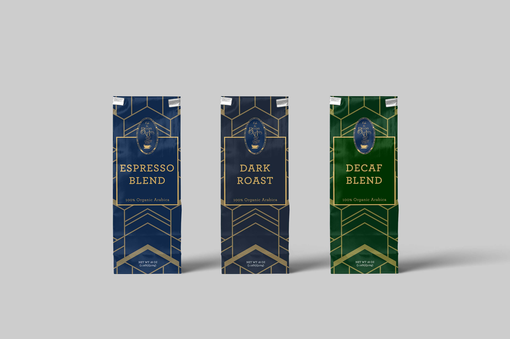
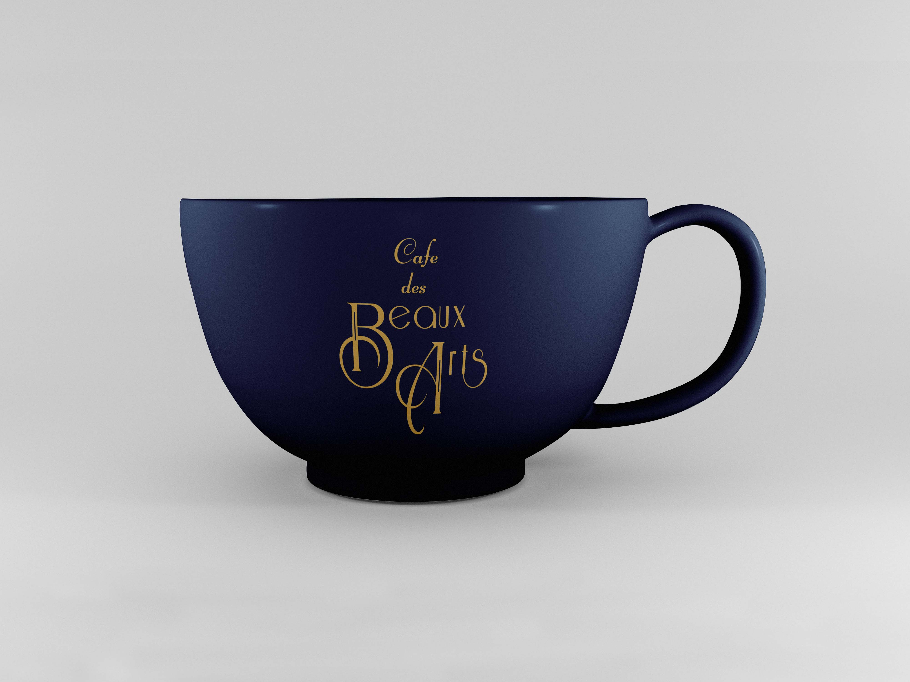
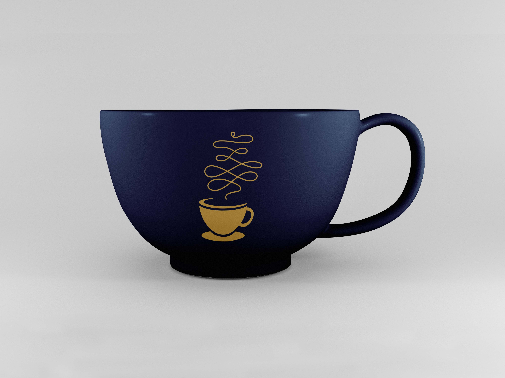
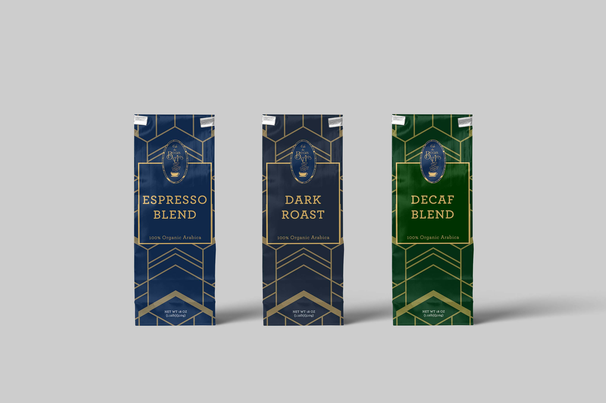
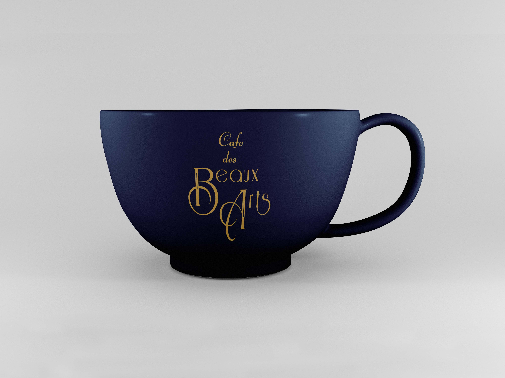
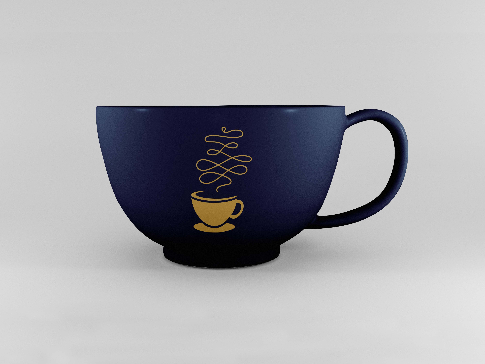

Founded by barista and coffee enthusiast John Lee. John wanted to introduce the art of craft coffee to the
community in Orlando, FL. Coffee isn’t just a quick sip. Coffee isn’t about a busy life and keeping you
awake. Brewing coffee is also an art just like other traditional art mediums. The store is expected to
attract many customers, especially the middle age adults that enjoy coffee and appreciate the time and
conversation spent over a cup of hand-crafted coffee. They also start selling their own crafted coffee beans
in-store and online. The client was inspired and wanted the brand to associate with the Art Deco period.
I was in charge of designing the brand identity package, product packaging and their website.
Category: Branding; Packaging Design; Web Design
Tools: Adobe Photoshop, Adobe Illustrator, Figma
 




